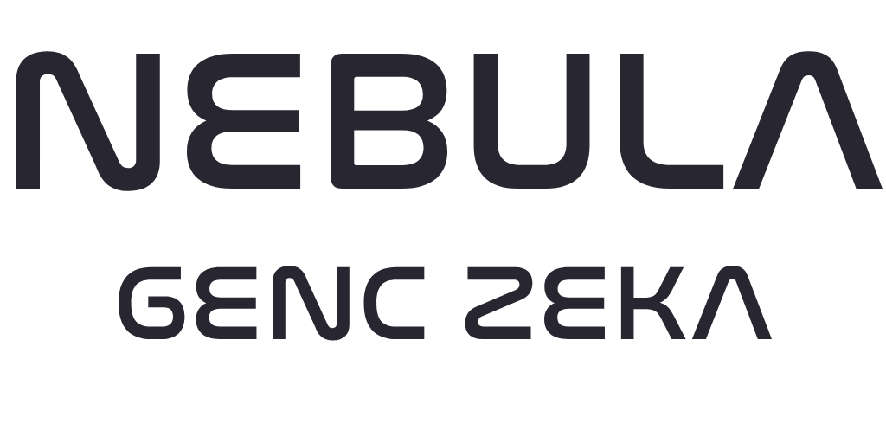

DENEME DERSİ · 30 DK
BUGÜN ANLATMAK YOK, YAPMAK VAR
{{ selam }}
{{ adSatiri }}
Bugün yapay zekâya tarif yazmayı öğreneceksin — ve dersin sonunda üç şey üretmiş olacaksın.
1 İZLE→2 BİRLİKTE YAP→3 TEK BAŞINA
AYNI YAPAY ZEKÂ · İKİ TARİF
Fark tarifte.
TARİF 1
"bir kedi çiz"
SONUÇ
Sıradan, herkesinkiyle aynı.
TARİF 2
"uzay kıyafetli bir kedi, Ay'ın yüzeyinde, çizgi roman stilinde, arka planda Dünya görünüyor"
SONUÇ
Senin hayalindeki kare.
İKİSİNİ DE ŞİMDİ CANLI DENİYORUZ →
İLK TARİF HEP ZAYIFTIR · BÜYÜTE BÜYÜTE GİDİLİR
Üç adımda iyi tarif
ÖRNEK A · GÖRSEL
1"bir araba çiz"
2"kırmızı bir yarış arabası, yağmurlu gece pistinde"
3"kırmızı bir yarış arabası, yağmurlu gece pistinde, neon yansımalı, film afişi stilinde"
ÖRNEK B · YAZI
1"bana bir hikâye yaz"
2"uzayda geçen kısa bir macera hikâyesi yaz"
3"uzayda geçen macera hikâyesi: kahraman 12 yaşında bir astronot, 5 cümle, sürpriz sonlu"
DİKKAT
Her adımda tarif uzuyor ama iş azalıyor — düzeltme yerine baştan doğru anlatıyorsun.
TÜM MODELLERDE ORTAK DİL · 4 PARÇA
Tarif formülü
BUNU AÇIK TUT
1 · ÖZNE
Kim / ne, kaç tane, ne yapıyor
"uzay kıyafetli tek bir kedi, zıplıyor"
2 · SAHNE
Nerede, ne zaman, hava nasıl
"Ay'ın yüzeyinde, arka planda Dünya"
3 · STİL
Hangi ortam, hangi görünüm
"çizgi roman" · "fotoğraf" · "3D" · "suluboya"
4 · TEKNİK
Işık, açı, kompozisyon
"yumuşak ışık, alçak açı, geniş kadraj"
NET OL
Belirsizlik bırakma — sayı, renk, eylem söyle.
SINIR KOY
İstemediğini de yaz: "üzerinde yazı olmasın".
TEK ŞEYİ DEĞİŞTİR
Her denemede bir kelime değiştir, farkı izle.
ŞİMDİ SENİN KONUN · SEN SÖYLE, BİRLİKTE EKLEYELİM
Her kelime bir düğme.
TUR 1
bir ejderha
TUR 2
bir ejderha origamiden
TUR 3
origamiden bir ejderha, neon ışıklı bir şehirde
TUR 4
origamiden bir ejderha, neon ışıklı bir şehirde, film afişi stilinde
HER TURDA TEK KELİME · FARKI BİRLİKTE İZLE
ÖRNEK ÜRETİM · 4 ADIMDA
Kendi kitabının kapağı.
YAZAR: SEN
ADIM 1
bir kitap kapağı
ADIM 2
bir kitap kapağı: uzay macerası romanı, yazar: {{ yazarAdi }}
ADIM 3
…kitap ahşap bir masanın üzerinde duruyor, yanında bir fincan
ADIM 4
uzay macerası romanı kitap kapağı, yazar adı "{{ yazarAdi }}", kitap ahşap masada duruyor — 35mm objektif, f/1.8 diyafram, sığ alan derinliği, yumuşak pencere ışığı, 45° üstten açı, hafif film greni, fotogerçekçi
4. ADIM GERÇEK BİR TEKNİK PROMPT — PROFESYONELLER BÖYLE YAZIYOR
FORMÜLÜN ÜSTÜNE · 3 USTA HAREKETİ
Ustalar ne yapıyor?
1 · STİL SÖYLE
Aynı fikir, bambaşka görünüm
"çizgi roman" · "origami" · "film afişi" · "piksel oyun"
2 · DÜZELTTİR
Beğenmedin mi? Baştan yazma
"aynısı olsun ama gece" · "biraz daha yakından göster"
3 · SINIR KOY
İstemediğini de söyle
"üzerinde yazı olmasın" · "sadece iki renk kullan"
SIR
Yapay zekâ seni okuyamaz — ne kadar net anlatırsan o kadar seninkini yapar.
BUGÜN SADECE BAŞLANGIÇTI
Önümüzdeki haftalarda neler var?
GÖRSEL
Kendi avatarın ve üç stilli posterin
VİDEO
Konuşan karakter, kendi mini filmin
MÜZİK
Sözleri sana ait kendi şarkın
OYUN
Tarayıcıda çalışan kendi oyunun
WEB
Yayında, gerçek bir web siten
FİNAL
Kendi yapay zekâ aracın
VE HER DERS SONRASI: KENDİ DERGİN — 16 SAYI, TEK CİLTTE
VELİ ÖZETİ · 5 DAKİKA
Bugün ne oldu?

1 · İZLEDİ
Kötü tarifle iyi tarifin farkını gördü
2 · BİRLİKTE
Formülle kendi görselini üretti
3 · TEK BAŞINA
Yardımsız, sıfırdan bir üretim yaptı
